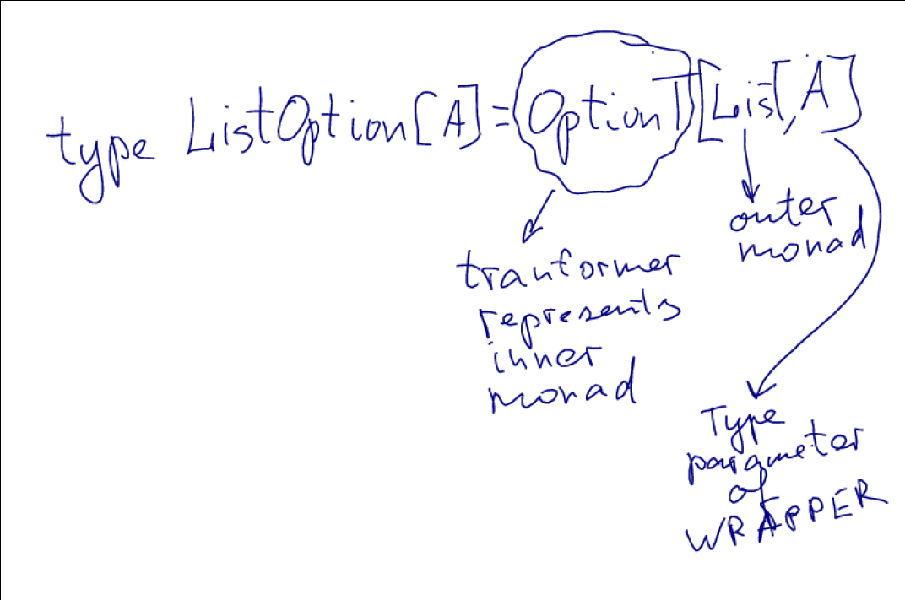

Created: 2020-06-16 Tue 11:16
DB user lookup can
def lookupUserName(id: Long): Either[Error, Option[String]] =
for {
optUser <- lookupUser(id)
} yield {
for { user <- optUser } yield user.name
}
def compose[M1[_]: Monad, M2[_]: Monad] = {
type Composed[A] = M1[M2[A]]
new Monad[Composed] {
def pure[A](a: A): Composed[A] = a.pure[M2].pure[M1]
def flatMap[A, B](fa: Composed[A])(f: A => Composed[B]): Composed[B] = ???
}
}
An attempt to use flatMap
def compose[M1[_]: Monad, M2[_]: Monad] = {
type Composed[A] = M1[M2[A]]
new Monad[Composed] {
def pure[A](a: A): Composed[A] = a.pure[M2].pure[M1]
def flatMap[A, B](fa: Composed[A])(f: A => Composed[B]): Composed[B] =
Monad[M1].flatMap(fa)(m => Monad[M2].flatMap(m)(f))
def tailRecM[A, B](a: A)(f: A => Composed[Either[A,B]]): Composed[B] = ???
}
}
cmd8.sc:8: type mismatch;
found : A => Composed[B]
(which expands to) A => M1[M2[B]]
required: A => M2[?]
Monad[M1].flatMap(fa)(m => Monad[M2].flatMap(m)(f))
Compilation Failed
M2 is Option
def compose[M1[_]: Monad] = {
type Composed[A] = M1[Option[A]]
new Monad[Composed] {
def pure[A](a: A): Composed[A] = a.pure[Option].pure[M1]
def flatMap[A, B](fa: Composed[A])(f: A => Composed[B]): Composed[B] =
Monad[M1].flatMap(fa)(m => m.fold[Composed[B]](Option.empty.pure[M1])(f) )
def tailRecM[A, B](a: A)(f: A => Composed[Either[A,B]]): Composed[B] = ???
}
}
It is impossible to write a general definition of flatMap
without knowing something about M1 or M2.
OptionT composes Option with other Monad.
import cats.data.OptionT
type ListOption[A] = OptionT[List, A]
OptionT constructor creates instances.
@ val result1: ListOption[Int] = OptionT(List(Option(10), None))
result1: ListOption[Int] = OptionT(List(Some(10), None))
@ val result2: ListOption[Int] = 32.pure[ListOption]
result2: ListOption[Int] = OptionT(List(Some(32)))
map and flatMap work as expected on combined monads
@ for {
r1 <- result1
r2 <- result2
} yield r1 + r2
res32: OptionT[List, Int] = OptionT(List(Some(42), None))
Monad transformer is a monad that wraps STACK of monads.
Main concepts:
type ListOption[A] = OptionT[List, A]

Outer Monad is HKT of 2 type parameters
// Alias Either to a type constructor with one parameter:
type ErrorOr[A] = Either[String, A]
// Build our final monad stack using OptionT:
type ErrorOrOption[A] = OptionT[ErrorOr, A]
Stack of three of more monads.
Let's create Future of an Either of Option.
Future[Either[E, Option[A]]]
Future[Either[E, Option[A]]]
type FutureEither[A] = EitherT[Future, String, A]
type FutureEitherOption[A] = OptionT[FutureEither, A]
val futureEitherOr: FutureEitherOption[Int] =
for {
a <- 10.pure[FutureEitherOption]
b <- 32.pure[FutureEitherOption]
} yield a + b
Use kind projector instead of defining type aliases.
@ 123.pure[EitherT[Option, String, ?]]
res65: EitherT[Option, String, Int] = EitherT(Some(Right(123)))
Create using apply:
@ val errorStack1 = OptionT[ErrorOr, Int](Right(Some(10)))
errorStack1: OptionT[ErrorOr, Int] = OptionT(Right(Some(10)))
Create using pure:
@ val errorStack2 = 32.pure[ErrorOrOption]
errorStack2: ErrorOrOption[Int] = OptionT(Right(Some(32)))
Unpack using value method.
@ errorStack1.value
res68: ErrorOr[Option[Int]] = Right(Some(10))
@ errorStack2.value.map(_.getOrElse(-1))
res69: Either[String, Int] = Right(32)
More than one call to value to unpack larger stack.
@ futureEitherOr
res70: FutureEitherOption[Int] = OptionT(EitherT(Future(Success(Right(Some(42))))))
@ val intermediate = futureEitherOr.value
intermediate: FutureEither[Option[Int]] = EitherT(Future(Success(Right(Some(42)))))
@ val stack = intermediate.value
stack: Future[Either[String, Option[Int]]] = Future(Success(Right(Some(42))))
@ Await.result(stack, 1.second)
res73: Either[String, Option[Int]] = Right(Some(42))
Many monads are defined using the transformer and Id monad.
type Reader[E, A] = ReaderT[Id, E, A] // = Kleisli[Id, E, A]
type Writer[W, A] = WriterT[Id, W, A]
type State[S, A] = StateT[Id, S, A]
Some monads are defined separately but they tend to mirror the methods of the corresponding monad.
OptionT defines getOrElse
EitherT defines fold, bimap, swap etc…
To operate on transformers in different context we can end up having to unpack and repack them.
Create a single "super stack" and sticking to it throughout our code base.
Approach two:
Use monad transformers as local "glue code".
Expose untransformed stacks at module boundaries
type Logged[A] = Writer[List[String], A]
// Methods generally return untransformed stacks:
def parseNumber(str: String): Logged[Option[Int]] =
util.Try(str.toInt).toOption match {
case Some(num) => Writer(List(s"Read $str"), Some(num))
case None => Writer(List(s"Failed on $str"), None)
}
Logged[Option[Int]] is untransformed stack
// Consumers use monad transformers locally to simplify composition:
def addAll(a: String, b: String, c: String): Logged[Option[Int]] = {
import cats.data.OptionT
val result = for {
a <- OptionT(parseNumber(a))
b <- OptionT(parseNumber(b))
c <- OptionT(parseNumber(c))
} yield a + b + c
result.value
}
Transformed stack is used only inside addAll.
To outside world we expose untransformed stack.
This approach doesn't force OptionT on other users' code:
val result1 = addAll("1", "2", "3")
val result2 = addAll("1", "a", "3")